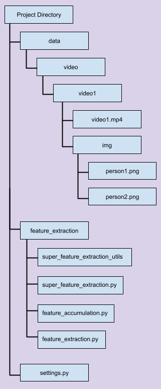

In order to analyze your data, you need to do a couple of things. First take a photo of each of the people appearing in the video; preferably forward facing photos. Next, create a folder that has the same name as the video, and move the video into that folder. Also inside that folder create a folder called “img”. In the “img” folder, insert the images of the people. Next, move the whole folder into “./data/video”. The following directory tree shows an example of how you should add your data; this directory is truncated to only show the relevant directories.

Next, you have to go to the “Feature Extraction” page to process your video data. The processed data has a particular format, so it is recommended that you process the video through this page instead of using your own processed data. Here you will select the features and significant moments you want to extract.
Now that all the data is ready, you can finally head to the “Video Analysis” page. This page will list all of the videos you can analyze; if a given video does not have the corresponding data extracted via the “Feature Extraction” page, it will not appear. Here you can select what extracted features you want to see, which person’s data you want to see, what overlays you want visible, and what significant moments you want visible.
There are three extractable and customizable aspects to this software; the base features (higher order features which are extracted and then processed into derived features), custom features (these extract useful information from the base features), and significant moments (moments which are deemed important based on a given criteria).
There are three available base features that can be extracted by this software. All the features are stored in a separate class during extraction.
Facial Emotions: These are the facial emotions expressed by a person. The recognized emotions (in the order that they appear in the resulting vector) is Anger, Disgust, Fear, Happiness, Sadness, Surprise, Neutral. The resulting feature is represented by a vector of size n_frames x 7; where n_frames is the number of frames and 7 represents the amount of emotions that can be recognized.
Facial landmarks: These are facial landmarks of a person. The resultant vector is of size n_frames x 468 x 3; there are 468 landmarks detected each with x,y, and z coordinates.
Pose detection: These are the pose keypoints of a person. The resultant vector is of size n_frames x 17 x 2; there are 17 keypoints detected each with x and y coordinates.
To add your own custom base features, add the extraction function to the following file: “./feature_extraction/super_feature_extraction.py” and add the name of the function to line 42 of “./settings.py” (this should be a list called “super_feature_functions”). All helper functions, models, etc. should be placed in “./feature_extraction/super_feature_extraction_utils”.
The extraction function should take in an image and the number of people to be considered (in that order), and return the face bounding boxes, the facial encodings, and the desired information (again, in that order). Utilities for the bounding boxes and facial encodings already exist; you simply have to look at the other functions to see how to obtain them.
Lastly, you must add a numpy array to the Person class found in the file “./feature_extraction/feature_extraction.py” corresponding to your feature and you must also add it to the the list “self.extracted_features” on line 20 of the same file.
There are 8 available derived features: Total Emotion Vectors (which are simply the list of emotions expressed), Emotion Entropy (the variation in emotion), Emotion Synchronicity (how in sync one person’s emotions are with another), Lip Movement (how much a person’s lips moves), Interactions (whether a person interacted with another person or not), People Proximities (how close one person is to another), Pose Synchronicity (how closely one person’s pose matches to another’s, and Activeness (how much a person moved around during that portion of the video).
To add custom derived features, you must add your extraction function to the file “./feature_extraction/feature_accumulation.py”. This function should taken in 2 values; the collected features and the extra features. The collected features corresponds to the list “self.extracted_features” from the Person class in “./feature_extraction/feature_extraction.py”. You must index the feature you want to use; for example since emotion vectors are the first element in “self.extracted_features”, if I want to access them I would use “collected_features[0]”. This function should return an array containing the extracted information.
If you want to include bounding box information, simple use “extra_features[0]”.
After creating your function, you must go to “./settings.py”, and add a dictionary to the list called “features” on line 43. This dictionary should include the feature name, the function, and the index of the associated base feature in the list “super_feature_functions” on line 42 of the same file.
Lastly, you must add an entry to the dictionary called “feature_processing_info” right below “features” in the same file. They key of this entry is the name of the feature given in the previous list; the value is a dictionary consisting of a boolean indicating if this is a pair feature or not (if the calculation of the feature requires data from 2 people), and a list of sub categories associated with the feature. If there are no sub categories, simply write None.
There is 1 available significant moment; “Interaction Detected”, which shows points in the video where an interaction took place.
To add custom significant moments, add your function to the file “./feature_extraction/feature_accumulation.py” This function should taken in 2 values; the collected features and the extra features; these inputs are the exact same as the ones for the derived features. This function should output either a 1 (if that set of frames is considered significant) or 0.
Next you must add the name of the significant moment to the list “significant_moment_names” on line 82 of the file “./settings.py”. The reference to the function should be added to the list below called “significant_moment_funcs”.